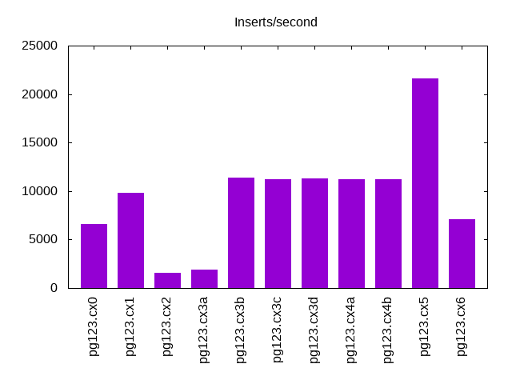

This is a report for the insert benchmark with 100M docs and 1 client(s). It is generated by scripts (bash, awk, sed) and Tufte might not be impressed. An overview of the insert benchmark is here and a short update is here. Below, by DBMS, I mean DBMS+version.config. An example is my8020.c10b40 where my means MySQL, 8020 is version 8.0.20 and c10b40 is the name for the configuration file. All configurations are stored here.
The test server is described here. Clients and the DBMS shared the same host running Ubuntu 18.04.5. All tests used Postgres 12.3. The configurations for Postgres are here.
The numbers are inserts/s for l.i0 and l.i1, indexed docs (or rows) /s for l.x and queries/s for q*.2. The values are the average rate over the entire test for inserts (IPS) and queries (QPS). The range of values for IPS and QPS is split into 3 parts: bottom 25%, middle 50%, top 25%. Values in the bottom 25% have a red background, values in the top 25% have a green background and values in the middle have no color. A gray background is used for values that can be ignored because the DBMS did not sustain the target insert rate. Red backgrounds are not used when the minimum value is within 80% of the max value.
| dbms | l.i0 | l.x | l.i1 | q100.2 | q200.2 | q400.2 | q600.2 | q800.2 | q1000.2 |
|---|---|---|---|---|---|---|---|---|---|
| pg123.cx0 | 100301 | 264116 | 6614 | 7456 | 7479 | 7428 | 7306 | 7245 | 7322 |
| pg123.cx1 | 101523 | 278830 | 9842 | 7739 | 7762 | 7775 | 7758 | 7759 | 7710 |
| pg123.cx2 | 100200 | 124969 | 1583 | 7780 | 7771 | 7742 | 7711 | 7723 | 7688 |
| pg123.cx3a | 100502 | 124658 | 1859 | 7706 | 7705 | 7711 | 7703 | 7686 | 7659 |
| pg123.cx3b | 100200 | 128333 | 11351 | 7719 | 7703 | 7664 | 7699 | 7699 | 7647 |
| pg123.cx3c | 101112 | 127842 | 11248 | 7715 | 7706 | 7728 | 7718 | 7644 | 7660 |
| pg123.cx3d | 100000 | 128663 | 11287 | 7637 | 7701 | 7672 | 7680 | 7655 | 7607 |
| pg123.cx4a | 100402 | 129161 | 11248 | 7774 | 7735 | 7747 | 7747 | 7677 | 7698 |
| pg123.cx4b | 100604 | 128498 | 11223 | 7730 | 7741 | 7723 | 7714 | 7695 | 7670 |
| pg123.cx5 | 100806 | 256010 | 21645 | 7748 | 7785 | 7787 | 7803 | 7805 | 7705 |
| pg123.cx6 | 101729 | 122822 | 7067 | 7740 | 7718 | 7714 | 7690 | 7670 | 7593 |
This lists the average rate of inserts/s for the tests that do inserts concurrent with queries. For such tests the query rate is listed in the table above. The read+write tests are setup so that the insert rate should match the target rate every second. Cells that are not at least 95% of the target have a red background to indicate a failure to satisfy the target.
| dbms | q100.2 | q200.2 | q400.2 | q600.2 | q800.2 | q1000.2 |
|---|---|---|---|---|---|---|
| pg123.cx0 | 100 | 200 | 399 | 599 | 799 | 998 |
| pg123.cx1 | 100 | 200 | 399 | 599 | 799 | 998 |
| pg123.cx2 | 100 | 200 | 399 | 599 | 799 | 998 |
| pg123.cx3a | 100 | 200 | 399 | 599 | 799 | 999 |
| pg123.cx3b | 100 | 200 | 399 | 599 | 799 | 999 |
| pg123.cx3c | 100 | 200 | 400 | 599 | 799 | 999 |
| pg123.cx3d | 100 | 200 | 399 | 599 | 799 | 999 |
| pg123.cx4a | 100 | 200 | 399 | 599 | 799 | 999 |
| pg123.cx4b | 100 | 200 | 399 | 599 | 799 | 999 |
| pg123.cx5 | 100 | 200 | 399 | 599 | 799 | 998 |
| pg123.cx6 | 100 | 200 | 399 | 599 | 799 | 999 |
| target | 100 | 200 | 400 | 600 | 800 | 1000 |
l.i0: load without secondary indexes. Graphs for performance per 1-second interval are here.
Average throughput:
Insert response time histogram: each cell has the percentage of responses that take <= the time in the header and max is the max response time in seconds. For the max column values in the top 25% of the range have a red background and in the bottom 25% of the range have a green background. The red background is not used when the min value is within 80% of the max value.
| dbms | 256us | 1ms | 4ms | 16ms | 64ms | 256ms | 1s | 4s | 16s | gt | max |
|---|---|---|---|---|---|---|---|---|---|---|---|
| pg123.cx0 | 83.573 | 16.422 | 0.004 | nonzero | 0.029 | ||||||
| pg123.cx1 | 87.938 | 12.058 | 0.005 | nonzero | 0.022 | ||||||
| pg123.cx2 | 84.614 | 15.379 | 0.003 | 0.003 | nonzero | 0.220 | |||||
| pg123.cx3a | 84.973 | 15.023 | 0.003 | 0.001 | 0.030 | ||||||
| pg123.cx3b | 82.846 | 17.149 | 0.004 | 0.001 | 0.029 | ||||||
| pg123.cx3c | 86.237 | 13.759 | 0.003 | nonzero | 0.026 | ||||||
| pg123.cx3d | 81.804 | 18.191 | 0.005 | nonzero | 0.030 | ||||||
| pg123.cx4a | 84.453 | 15.543 | 0.004 | nonzero | 0.035 | ||||||
| pg123.cx4b | 85.325 | 14.671 | 0.004 | nonzero | 0.025 | ||||||
| pg123.cx5 | 85.511 | 14.483 | 0.005 | nonzero | 0.024 | ||||||
| pg123.cx6 | 88.665 | 11.332 | 0.002 | nonzero | 0.027 |
Performance metrics for the DBMS listed above. Some are normalized by throughput, others are not. Legend for results is here.
ips qps rps rkbps wkbps rpq rkbpq wkbpi csps cpups cspq cpupq dbgb1 dbgb2 rss maxop p50 p99 tag 100301 0 0 0 42149 0.000 0.000 0.420 12268 45.7 0.122 18 9.6 10.6 0.0 0.029 100489 98171 pg123.cx0 101523 0 0 0 47396 0.000 0.000 0.467 12248 46.3 0.121 18 9.6 10.6 0.0 0.022 101788 97896 pg123.cx1 100200 0 0 0 48009 0.000 0.000 0.479 11952 47.3 0.119 19 9.6 10.6 0.0 0.220 100922 91797 pg123.cx2 100502 0 0 0 50623 0.000 0.000 0.504 12009 46.9 0.119 19 9.6 11.6 0.0 0.030 100890 94297 pg123.cx3a 100200 0 0 0 55845 0.000 0.000 0.557 12089 46.3 0.121 18 9.6 17.1 0.0 0.029 100327 96430 pg123.cx3b 101112 0 0 0 57483 0.000 0.000 0.569 12174 46.6 0.120 18 9.6 17.2 0.0 0.026 101289 96627 pg123.cx3c 100000 0 0 0 55711 0.000 0.000 0.557 12046 46.1 0.120 18 9.6 17.2 0.0 0.030 100193 94999 pg123.cx3d 100402 0 0 0 57388 0.000 0.000 0.572 12115 46.3 0.121 18 9.6 17.2 0.0 0.035 100593 95827 pg123.cx4a 100604 0 0 0 56256 0.000 0.000 0.559 12169 46.6 0.121 19 9.6 17.2 0.0 0.025 100889 96395 pg123.cx4b 100806 0 0 0 55747 0.000 0.000 0.553 12176 46.1 0.121 18 9.6 17.4 0.0 0.024 100987 97834 pg123.cx5 101729 0 16 133 56457 0.000 0.001 0.555 12327 46.8 0.121 18 9.6 17.3 0.0 0.027 101889 98562 pg123.cx6
l.x: create secondary indexes.
Average throughput:
Performance metrics for the DBMS listed above. Some are normalized by throughput, others are not. Legend for results is here.
ips qps rps rkbps wkbps rpq rkbpq wkbpi csps cpups cspq cpupq dbgb1 dbgb2 rss maxop p50 p99 tag 264116 0 4 149 135982 0.000 0.001 0.515 568 23.5 0.002 4 18.4 19.4 0.0 0.002 NA NA pg123.cx0 278830 0 71 8743 140004 0.000 0.031 0.502 524 24.6 0.002 4 18.4 19.4 0.0 0.002 NA NA pg123.cx1 124969 0 34 4167 62113 0.000 0.033 0.497 295 24.5 0.002 8 18.4 19.4 0.0 0.002 NA NA pg123.cx2 124658 0 37 4620 57730 0.000 0.037 0.463 282 24.5 0.002 8 18.4 20.4 0.0 0.002 NA NA pg123.cx3a 128333 0 40 4956 65909 0.000 0.039 0.514 361 24.5 0.003 8 18.4 26.0 0.0 0.003 NA NA pg123.cx3b 127842 0 40 4897 63603 0.000 0.038 0.498 348 24.5 0.003 8 18.4 26.1 0.0 0.003 NA NA pg123.cx3c 128663 0 40 4986 65896 0.000 0.039 0.512 349 24.4 0.003 8 18.4 26.0 0.0 0.002 NA NA pg123.cx3d 129161 0 40 4915 66231 0.000 0.038 0.513 321 24.4 0.002 8 18.4 26.0 0.0 0.002 NA NA pg123.cx4a 128498 0 39 4861 60699 0.000 0.038 0.472 337 24.4 0.003 8 18.4 26.0 0.0 0.003 NA NA pg123.cx4b 256010 0 116 14521 167503 0.000 0.057 0.654 1192 23.4 0.005 4 18.4 29.8 0.0 0.005 NA NA pg123.cx5 122822 0 137 7735 63224 0.001 0.063 0.515 340 24.5 0.003 8 18.4 26.1 0.0 0.229 NA NA pg123.cx6
l.i1: continue load after secondary indexes created. Graphs for performance per 1-second interval are here.
Average throughput:
Insert response time histogram: each cell has the percentage of responses that take <= the time in the header and max is the max response time in seconds. For the max column values in the top 25% of the range have a red background and in the bottom 25% of the range have a green background. The red background is not used when the min value is within 80% of the max value.
| dbms | 256us | 1ms | 4ms | 16ms | 64ms | 256ms | 1s | 4s | 16s | gt | max |
|---|---|---|---|---|---|---|---|---|---|---|---|
| pg123.cx0 | 46.712 | 47.331 | 5.109 | 0.850 | 0.208 | ||||||
| pg123.cx1 | 64.377 | 31.450 | 3.969 | 0.203 | 0.002 | 0.372 | |||||
| pg123.cx2 | 99.966 | 0.034 | 0.199 | ||||||||
| pg123.cx3a | 0.397 | 99.572 | 0.030 | 0.001 | 0.410 | ||||||
| pg123.cx3b | 76.532 | 16.918 | 6.539 | 0.011 | 0.240 | ||||||
| pg123.cx3c | 76.555 | 16.707 | 6.726 | 0.010 | 0.002 | 0.343 | |||||
| pg123.cx3d | 76.355 | 17.032 | 6.601 | 0.012 | 0.001 | 0.401 | |||||
| pg123.cx4a | 76.526 | 16.790 | 6.675 | 0.009 | 0.184 | ||||||
| pg123.cx4b | 76.339 | 17.001 | 6.650 | 0.009 | 0.001 | 0.289 | |||||
| pg123.cx5 | 89.762 | 9.190 | 1.038 | 0.009 | 0.001 | 0.328 | |||||
| pg123.cx6 | 55.589 | 32.146 | 12.247 | 0.018 | 0.144 |
Performance metrics for the DBMS listed above. Some are normalized by throughput, others are not. Legend for results is here.
ips qps rps rkbps wkbps rpq rkbpq wkbpi csps cpups cspq cpupq dbgb1 dbgb2 rss maxop p50 p99 tag 6614 0 432 4501 356307 0.065 0.681 53.874 5636 24.3 0.852 147 21.4 22.4 0.0 0.208 6092 1648 pg123.cx0 9842 0 837 7921 472236 0.085 0.805 47.979 11581 33.2 1.177 135 21.4 31.6 0.0 0.372 5643 2497 pg123.cx1 1583 0 135 1281 56070 0.085 0.810 35.427 1121 25.1 0.708 634 21.4 22.4 0.0 0.199 1549 1249 pg123.cx2 1859 0 164 1526 54005 0.088 0.821 29.044 1240 25.1 0.667 540 21.4 23.4 0.0 0.410 1798 1249 pg123.cx3a 11351 0 968 9193 46844 0.085 0.810 4.127 5063 25.7 0.446 91 21.4 30.2 0.0 0.240 5294 1299 pg123.cx3b 11248 0 964 9127 46102 0.086 0.811 4.098 5004 25.7 0.445 91 21.4 30.2 0.0 0.343 5244 1348 pg123.cx3c 11287 0 964 9145 53436 0.085 0.810 4.734 5007 25.7 0.444 91 21.4 30.2 0.0 0.401 5344 1299 pg123.cx3d 11248 0 968 9162 54330 0.086 0.814 4.830 4962 25.7 0.441 91 21.4 30.2 0.0 0.184 5194 1348 pg123.cx4a 11223 0 961 9122 57608 0.086 0.813 5.133 4900 25.8 0.437 92 21.4 30.2 0.0 0.289 5294 1299 pg123.cx4b 21645 0 1860 17533 129001 0.086 0.810 5.960 9735 27.8 0.450 51 21.4 37.0 0.0 0.328 18628 2098 pg123.cx5 7067 0 542 5131 122579 0.077 0.726 17.345 5437 26.9 0.769 152 21.4 29.4 0.0 0.144 3999 1249 pg123.cx6
q100.2: range queries with 100 insert/s per client, 2nd loop. Graphs for performance per 1-second interval are here.
Average throughput:
Query response time histogram: each cell has the percentage of responses that take <= the time in the header and max is the max response time in seconds. For max values in the top 25% of the range have a red background and in the bottom 25% of the range have a green background. The red background is not used when the min value is within 80% of the max value.
| dbms | 256us | 1ms | 4ms | 16ms | 64ms | 256ms | 1s | 4s | 16s | gt | max |
|---|---|---|---|---|---|---|---|---|---|---|---|
| pg123.cx0 | 99.977 | 0.022 | nonzero | 0.003 | |||||||
| pg123.cx1 | 99.985 | 0.015 | 0.001 | nonzero | 0.008 | ||||||
| pg123.cx2 | 99.985 | 0.014 | nonzero | nonzero | 0.012 | ||||||
| pg123.cx3a | 99.985 | 0.015 | nonzero | nonzero | 0.013 | ||||||
| pg123.cx3b | 99.985 | 0.015 | nonzero | nonzero | 0.010 | ||||||
| pg123.cx3c | 99.985 | 0.015 | nonzero | nonzero | 0.011 | ||||||
| pg123.cx3d | 99.985 | 0.015 | nonzero | nonzero | 0.012 | ||||||
| pg123.cx4a | 99.985 | 0.015 | nonzero | nonzero | 0.013 | ||||||
| pg123.cx4b | 99.986 | 0.014 | nonzero | nonzero | 0.013 | ||||||
| pg123.cx5 | 99.985 | 0.014 | 0.001 | 0.003 | |||||||
| pg123.cx6 | 99.987 | 0.013 | nonzero | nonzero | 0.011 |
Insert response time histogram: each cell has the percentage of responses that take <= the time in the header and max is the max response time in seconds. For max values in the top 25% of the range have a red background and in the bottom 25% of the range have a green background. The red background is not used when the min value is within 80% of the max value.
| dbms | 256us | 1ms | 4ms | 16ms | 64ms | 256ms | 1s | 4s | 16s | gt | max |
|---|---|---|---|---|---|---|---|---|---|---|---|
| pg123.cx0 | 32.028 | 67.972 | 0.012 | ||||||||
| pg123.cx1 | 99.861 | 0.139 | 0.006 | ||||||||
| pg123.cx2 | 100.000 | 0.057 | |||||||||
| pg123.cx3a | 100.000 | 0.053 | |||||||||
| pg123.cx3b | 100.000 | 0.043 | |||||||||
| pg123.cx3c | 100.000 | 0.044 | |||||||||
| pg123.cx3d | 100.000 | 0.044 | |||||||||
| pg123.cx4a | 100.000 | 0.043 | |||||||||
| pg123.cx4b | 100.000 | 0.044 | |||||||||
| pg123.cx5 | 99.889 | 0.111 | 0.006 | ||||||||
| pg123.cx6 | 100.000 | 0.052 |
Performance metrics for the DBMS listed above. Some are normalized by throughput, others are not. Legend for results is here.
ips qps rps rkbps wkbps rpq rkbpq wkbpi csps cpups cspq cpupq dbgb1 dbgb2 rss maxop p50 p99 tag 100 7456 35 347 4868 0.005 0.047 48.777 28790 25.4 3.861 136 21.8 22.8 0.0 0.003 7464 7368 pg123.cx0 100 7739 0 0 4614 0.000 0.000 46.237 29790 25.1 3.849 130 21.8 22.8 0.0 0.008 7751 7639 pg123.cx1 100 7780 0 0 3863 0.000 0.000 38.706 29968 27.0 3.852 139 21.8 22.6 0.0 0.012 7783 7674 pg123.cx2 100 7706 0 0 4031 0.000 0.000 40.392 29684 27.1 3.852 141 21.8 23.0 0.0 0.013 7719 7608 pg123.cx3a 100 7719 0 0 4889 0.000 0.000 48.989 29738 27.1 3.853 140 21.8 26.8 0.0 0.010 7720 7596 pg123.cx3b 100 7715 0 0 5031 0.000 0.000 50.410 29772 27.1 3.859 141 21.8 26.8 0.0 0.011 7720 7592 pg123.cx3c 100 7637 0 0 4937 0.000 0.000 49.471 29424 27.1 3.853 142 21.8 26.8 0.0 0.012 7640 7528 pg123.cx3d 100 7774 0 0 4924 0.000 0.000 49.341 29949 27.0 3.852 139 21.8 26.8 0.0 0.013 7783 7656 pg123.cx4a 100 7730 0 0 4897 0.000 0.000 49.064 29779 27.0 3.853 140 21.8 26.8 0.0 0.013 7735 7624 pg123.cx4b 100 7748 0 0 6590 0.000 0.000 66.033 29835 25.1 3.851 130 21.8 32.8 0.0 0.003 7751 7624 pg123.cx5 100 7740 2 14 4960 0.000 0.002 49.702 29823 27.1 3.853 140 21.8 25.3 0.0 0.011 7740 7640 pg123.cx6
q200.2: range queries with 200 insert/s per client, 2nd loop. Graphs for performance per 1-second interval are here.
Average throughput:
Query response time histogram: each cell has the percentage of responses that take <= the time in the header and max is the max response time in seconds. For max values in the top 25% of the range have a red background and in the bottom 25% of the range have a green background. The red background is not used when the min value is within 80% of the max value.
| dbms | 256us | 1ms | 4ms | 16ms | 64ms | 256ms | 1s | 4s | 16s | gt | max |
|---|---|---|---|---|---|---|---|---|---|---|---|
| pg123.cx0 | 99.973 | 0.026 | 0.002 | nonzero | 0.007 | ||||||
| pg123.cx1 | 99.983 | 0.016 | 0.001 | nonzero | 0.013 | ||||||
| pg123.cx2 | 99.981 | 0.018 | 0.001 | nonzero | 0.012 | ||||||
| pg123.cx3a | 99.981 | 0.018 | 0.001 | nonzero | 0.010 | ||||||
| pg123.cx3b | 99.981 | 0.018 | 0.001 | nonzero | 0.012 | ||||||
| pg123.cx3c | 99.980 | 0.019 | 0.001 | nonzero | 0.014 | ||||||
| pg123.cx3d | 99.980 | 0.018 | 0.001 | nonzero | 0.012 | ||||||
| pg123.cx4a | 99.981 | 0.018 | 0.001 | nonzero | 0.011 | ||||||
| pg123.cx4b | 99.981 | 0.018 | 0.001 | nonzero | 0.012 | ||||||
| pg123.cx5 | 99.981 | 0.016 | 0.002 | nonzero | 0.010 | ||||||
| pg123.cx6 | 99.981 | 0.018 | 0.001 | nonzero | 0.012 |
Insert response time histogram: each cell has the percentage of responses that take <= the time in the header and max is the max response time in seconds. For max values in the top 25% of the range have a red background and in the bottom 25% of the range have a green background. The red background is not used when the min value is within 80% of the max value.
| dbms | 256us | 1ms | 4ms | 16ms | 64ms | 256ms | 1s | 4s | 16s | gt | max |
|---|---|---|---|---|---|---|---|---|---|---|---|
| pg123.cx0 | 79.472 | 20.444 | 0.083 | 0.033 | |||||||
| pg123.cx1 | 94.403 | 4.181 | 1.417 | 0.018 | |||||||
| pg123.cx2 | 100.000 | 0.054 | |||||||||
| pg123.cx3a | 100.000 | 0.048 | |||||||||
| pg123.cx3b | 100.000 | 0.048 | |||||||||
| pg123.cx3c | 100.000 | 0.046 | |||||||||
| pg123.cx3d | 100.000 | 0.048 | |||||||||
| pg123.cx4a | 100.000 | 0.047 | |||||||||
| pg123.cx4b | 100.000 | 0.048 | |||||||||
| pg123.cx5 | 96.972 | 2.097 | 0.931 | 0.019 | |||||||
| pg123.cx6 | 100.000 | 0.050 |
Performance metrics for the DBMS listed above. Some are normalized by throughput, others are not. Legend for results is here.
ips qps rps rkbps wkbps rpq rkbpq wkbpi csps cpups cspq cpupq dbgb1 dbgb2 rss maxop p50 p99 tag 200 7479 10 98 9395 0.001 0.013 47.044 28860 25.5 3.859 136 22.6 23.6 0.0 0.007 7480 7368 pg123.cx0 200 7762 0 3 9010 0.000 0.000 45.143 29919 25.4 3.854 131 22.6 23.6 0.0 0.013 7767 7656 pg123.cx1 200 7771 0 3 7158 0.000 0.000 35.859 29961 28.6 3.856 147 22.6 23.6 0.0 0.012 7783 7656 pg123.cx2 200 7705 0 3 7331 0.000 0.000 36.729 29712 28.6 3.856 148 22.6 23.7 0.0 0.010 7704 7592 pg123.cx3a 200 7703 0 3 7430 0.000 0.000 37.227 29708 28.7 3.857 149 22.6 24.2 0.0 0.012 7704 7592 pg123.cx3b 200 7706 0 3 7339 0.000 0.000 36.768 29720 28.6 3.857 148 22.6 24.3 0.0 0.014 7709 7576 pg123.cx3c 200 7701 0 3 7358 0.000 0.000 36.863 29698 28.6 3.856 149 22.6 24.3 0.0 0.012 7704 7592 pg123.cx3d 200 7735 0 3 7469 0.000 0.000 37.420 29830 28.6 3.857 148 22.6 24.3 0.0 0.011 7736 7624 pg123.cx4a 200 7741 0 3 7297 0.000 0.000 36.559 29856 28.7 3.857 148 22.6 24.2 0.0 0.012 7751 7640 pg123.cx4b 200 7785 0 3 9539 0.000 0.000 47.790 30003 25.4 3.854 131 22.6 26.0 0.0 0.010 7784 7640 pg123.cx5 200 7718 15 136 7318 0.002 0.018 36.662 29801 28.7 3.861 149 22.6 24.1 0.0 0.012 7720 7624 pg123.cx6
q400.2: range queries with 400 insert/s per client, 2nd loop. Graphs for performance per 1-second interval are here.
Average throughput:
Query response time histogram: each cell has the percentage of responses that take <= the time in the header and max is the max response time in seconds. For max values in the top 25% of the range have a red background and in the bottom 25% of the range have a green background. The red background is not used when the min value is within 80% of the max value.
| dbms | 256us | 1ms | 4ms | 16ms | 64ms | 256ms | 1s | 4s | 16s | gt | max |
|---|---|---|---|---|---|---|---|---|---|---|---|
| pg123.cx0 | 99.933 | 0.063 | 0.004 | nonzero | nonzero | 0.023 | |||||
| pg123.cx1 | 99.963 | 0.036 | 0.001 | nonzero | 0.008 | ||||||
| pg123.cx2 | 99.957 | 0.039 | 0.003 | 0.001 | 0.010 | ||||||
| pg123.cx3a | 99.961 | 0.034 | 0.004 | 0.001 | 0.010 | ||||||
| pg123.cx3b | 99.960 | 0.035 | 0.004 | nonzero | 0.010 | ||||||
| pg123.cx3c | 99.962 | 0.034 | 0.003 | nonzero | 0.008 | ||||||
| pg123.cx3d | 99.960 | 0.036 | 0.004 | 0.001 | 0.012 | ||||||
| pg123.cx4a | 99.962 | 0.033 | 0.004 | 0.001 | 0.010 | ||||||
| pg123.cx4b | 99.963 | 0.034 | 0.003 | nonzero | 0.010 | ||||||
| pg123.cx5 | 99.965 | 0.034 | 0.001 | nonzero | 0.006 | ||||||
| pg123.cx6 | 99.958 | 0.037 | 0.004 | 0.001 | 0.011 |
Insert response time histogram: each cell has the percentage of responses that take <= the time in the header and max is the max response time in seconds. For max values in the top 25% of the range have a red background and in the bottom 25% of the range have a green background. The red background is not used when the min value is within 80% of the max value.
| dbms | 256us | 1ms | 4ms | 16ms | 64ms | 256ms | 1s | 4s | 16s | gt | max |
|---|---|---|---|---|---|---|---|---|---|---|---|
| pg123.cx0 | 94.153 | 5.743 | 0.104 | 0.052 | |||||||
| pg123.cx1 | 65.076 | 32.521 | 2.403 | 0.022 | |||||||
| pg123.cx2 | 100.000 | 0.048 | |||||||||
| pg123.cx3a | 100.000 | 0.046 | |||||||||
| pg123.cx3b | 100.000 | 0.047 | |||||||||
| pg123.cx3c | 0.007 | 99.993 | 0.047 | ||||||||
| pg123.cx3d | 0.007 | 99.993 | 0.047 | ||||||||
| pg123.cx4a | 100.000 | 0.045 | |||||||||
| pg123.cx4b | 100.000 | 0.046 | |||||||||
| pg123.cx5 | 74.215 | 24.854 | 0.931 | 0.022 | |||||||
| pg123.cx6 | 0.021 | 99.979 | 0.040 |
Performance metrics for the DBMS listed above. Some are normalized by throughput, others are not. Legend for results is here.
ips qps rps rkbps wkbps rpq rkbpq wkbpi csps cpups cspq cpupq dbgb1 dbgb2 rss maxop p50 p99 tag 399 7428 15 122 17843 0.002 0.016 44.685 28790 25.7 3.876 138 24.1 25.2 0.0 0.023 7432 7320 pg123.cx0 399 7775 56 514 17168 0.007 0.066 42.996 30174 25.9 3.881 133 24.1 25.2 0.0 0.008 7783 7642 pg123.cx1 399 7742 56 515 13349 0.007 0.066 33.432 30009 31.4 3.876 162 24.1 25.2 0.0 0.010 7751 7595 pg123.cx2 399 7711 71 621 12032 0.009 0.080 30.133 29911 30.8 3.879 160 24.1 25.9 0.0 0.010 7719 7576 pg123.cx3a 399 7664 56 501 12024 0.007 0.065 30.114 29713 30.7 3.877 160 24.1 25.9 0.0 0.010 7672 7544 pg123.cx3b 400 7728 56 500 11907 0.007 0.065 29.805 29937 30.8 3.874 159 24.1 25.9 0.0 0.008 7735 7608 pg123.cx3c 399 7672 56 504 11925 0.007 0.066 29.865 29739 30.7 3.876 160 24.1 25.9 0.0 0.012 7672 7560 pg123.cx3d 399 7747 56 504 11906 0.007 0.065 29.818 30044 30.7 3.878 159 24.1 25.9 0.0 0.010 7752 7624 pg123.cx4a 399 7723 56 503 11908 0.007 0.065 29.821 29960 30.8 3.879 160 24.1 25.9 0.0 0.010 7735 7608 pg123.cx4b 399 7787 56 485 14580 0.007 0.062 36.513 30189 25.9 3.877 133 24.1 27.2 0.0 0.006 7799 7672 pg123.cx5 399 7714 4 32 12935 0.001 0.004 32.395 29860 30.8 3.871 160 24.1 25.9 0.0 0.011 7720 7592 pg123.cx6
q600.2: range queries with 600 insert/s per client, 2nd loop. Graphs for performance per 1-second interval are here.
Average throughput:
Query response time histogram: each cell has the percentage of responses that take <= the time in the header and max is the max response time in seconds. For max values in the top 25% of the range have a red background and in the bottom 25% of the range have a green background. The red background is not used when the min value is within 80% of the max value.
| dbms | 256us | 1ms | 4ms | 16ms | 64ms | 256ms | 1s | 4s | 16s | gt | max |
|---|---|---|---|---|---|---|---|---|---|---|---|
| pg123.cx0 | 99.743 | 0.250 | 0.006 | 0.001 | 0.001 | 0.040 | |||||
| pg123.cx1 | 99.940 | 0.059 | 0.001 | nonzero | 0.011 | ||||||
| pg123.cx2 | 99.920 | 0.074 | 0.004 | 0.001 | 0.012 | ||||||
| pg123.cx3a | 99.934 | 0.061 | 0.004 | 0.001 | 0.011 | ||||||
| pg123.cx3b | 99.938 | 0.058 | 0.004 | nonzero | 0.007 | ||||||
| pg123.cx3c | 99.940 | 0.056 | 0.004 | nonzero | 0.007 | ||||||
| pg123.cx3d | 99.936 | 0.060 | 0.004 | nonzero | 0.008 | ||||||
| pg123.cx4a | 99.941 | 0.055 | 0.004 | nonzero | 0.006 | ||||||
| pg123.cx4b | 99.936 | 0.060 | 0.004 | nonzero | 0.006 | ||||||
| pg123.cx5 | 99.946 | 0.053 | 0.001 | nonzero | 0.006 | ||||||
| pg123.cx6 | 99.928 | 0.066 | 0.005 | 0.001 | 0.014 |
Insert response time histogram: each cell has the percentage of responses that take <= the time in the header and max is the max response time in seconds. For max values in the top 25% of the range have a red background and in the bottom 25% of the range have a green background. The red background is not used when the min value is within 80% of the max value.
| dbms | 256us | 1ms | 4ms | 16ms | 64ms | 256ms | 1s | 4s | 16s | gt | max |
|---|---|---|---|---|---|---|---|---|---|---|---|
| pg123.cx0 | 84.750 | 15.032 | 0.218 | 0.036 | |||||||
| pg123.cx1 | 50.329 | 48.292 | 1.380 | 0.028 | |||||||
| pg123.cx2 | 0.005 | 99.995 | 0.046 | ||||||||
| pg123.cx3a | 5.894 | 94.106 | 0.050 | ||||||||
| pg123.cx3b | 6.579 | 93.421 | 0.052 | ||||||||
| pg123.cx3c | 6.079 | 93.921 | 0.041 | ||||||||
| pg123.cx3d | 6.032 | 93.968 | 0.055 | ||||||||
| pg123.cx4a | 6.394 | 93.606 | 0.049 | ||||||||
| pg123.cx4b | 5.593 | 94.407 | 0.040 | ||||||||
| pg123.cx5 | 60.819 | 38.426 | 0.755 | 0.029 | |||||||
| pg123.cx6 | 8.065 | 91.935 | 0.044 |
Performance metrics for the DBMS listed above. Some are normalized by throughput, others are not. Legend for results is here.
ips qps rps rkbps wkbps rpq rkbpq wkbpi csps cpups cspq cpupq dbgb1 dbgb2 rss maxop p50 p99 tag 599 7306 4 36 23513 0.001 0.005 39.255 28431 26.0 3.891 142 25.9 26.9 0.0 0.040 7352 4954 pg123.cx0 599 7758 168 1510 22395 0.022 0.195 37.388 30416 26.3 3.921 136 25.9 26.9 0.0 0.011 7767 7655 pg123.cx1 599 7711 168 1510 17754 0.022 0.196 29.639 30267 33.0 3.925 171 25.9 26.9 0.0 0.012 7738 6217 pg123.cx2 599 7703 168 1490 15718 0.022 0.193 26.240 30128 31.6 3.911 164 25.9 27.9 0.0 0.011 7719 7544 pg123.cx3a 599 7699 167 1480 15731 0.022 0.192 26.262 30111 31.6 3.911 164 25.9 28.0 0.0 0.007 7704 7576 pg123.cx3b 599 7718 168 1486 15868 0.022 0.193 26.478 30163 31.6 3.908 164 25.9 28.0 0.0 0.007 7720 7592 pg123.cx3c 599 7680 166 1476 15805 0.022 0.192 26.386 30023 31.5 3.909 164 25.9 28.0 0.0 0.008 7688 7560 pg123.cx3d 599 7747 166 1478 15637 0.021 0.191 26.105 30295 31.5 3.910 163 25.9 28.0 0.0 0.006 7752 7624 pg123.cx4a 599 7714 167 1471 15437 0.022 0.191 25.772 30190 31.6 3.913 164 25.9 28.0 0.0 0.006 7720 7594 pg123.cx4b 599 7803 166 1443 18397 0.021 0.185 30.713 30512 26.2 3.910 134 25.9 29.4 0.0 0.006 7815 7657 pg123.cx5 599 7690 118 1059 17333 0.015 0.138 28.937 29990 31.7 3.900 165 25.9 28.0 0.0 0.014 7703 7576 pg123.cx6
q800.2: range queries with 800 insert/s per client, 2nd loop. Graphs for performance per 1-second interval are here.
Average throughput:
Query response time histogram: each cell has the percentage of responses that take <= the time in the header and max is the max response time in seconds. For max values in the top 25% of the range have a red background and in the bottom 25% of the range have a green background. The red background is not used when the min value is within 80% of the max value.
| dbms | 256us | 1ms | 4ms | 16ms | 64ms | 256ms | 1s | 4s | 16s | gt | max |
|---|---|---|---|---|---|---|---|---|---|---|---|
| pg123.cx0 | 99.656 | 0.332 | 0.010 | 0.001 | 0.001 | 0.041 | |||||
| pg123.cx1 | 99.914 | 0.085 | 0.001 | nonzero | 0.009 | ||||||
| pg123.cx2 | 99.906 | 0.088 | 0.005 | 0.001 | 0.015 | ||||||
| pg123.cx3a | 99.919 | 0.076 | 0.004 | 0.001 | nonzero | 0.017 | |||||
| pg123.cx3b | 99.916 | 0.079 | 0.004 | nonzero | nonzero | 0.016 | |||||
| pg123.cx3c | 99.917 | 0.078 | 0.004 | nonzero | nonzero | 0.017 | |||||
| pg123.cx3d | 99.917 | 0.079 | 0.005 | nonzero | nonzero | 0.017 | |||||
| pg123.cx4a | 99.919 | 0.076 | 0.004 | nonzero | 0.012 | ||||||
| pg123.cx4b | 99.918 | 0.077 | 0.004 | nonzero | nonzero | 0.016 | |||||
| pg123.cx5 | 99.926 | 0.073 | 0.001 | nonzero | 0.006 | ||||||
| pg123.cx6 | 99.918 | 0.076 | 0.006 | 0.001 | nonzero | 0.017 |
Insert response time histogram: each cell has the percentage of responses that take <= the time in the header and max is the max response time in seconds. For max values in the top 25% of the range have a red background and in the bottom 25% of the range have a green background. The red background is not used when the min value is within 80% of the max value.
| dbms | 256us | 1ms | 4ms | 16ms | 64ms | 256ms | 1s | 4s | 16s | gt | max |
|---|---|---|---|---|---|---|---|---|---|---|---|
| pg123.cx0 | 94.792 | 4.986 | 0.222 | 0.049 | |||||||
| pg123.cx1 | 62.333 | 36.983 | 0.684 | 0.034 | |||||||
| pg123.cx2 | 0.062 | 99.938 | 0.045 | ||||||||
| pg123.cx3a | 33.639 | 66.361 | 0.057 | ||||||||
| pg123.cx3b | 34.066 | 65.934 | 0.051 | ||||||||
| pg123.cx3c | 33.031 | 66.969 | 0.040 | ||||||||
| pg123.cx3d | 32.542 | 67.458 | 0.042 | ||||||||
| pg123.cx4a | 33.247 | 66.753 | 0.047 | ||||||||
| pg123.cx4b | 33.035 | 66.965 | 0.043 | ||||||||
| pg123.cx5 | 74.826 | 23.642 | 1.531 | 0.030 | |||||||
| pg123.cx6 | 38.167 | 61.833 | 0.041 |
Performance metrics for the DBMS listed above. Some are normalized by throughput, others are not. Legend for results is here.
ips qps rps rkbps wkbps rpq rkbpq wkbpi csps cpups cspq cpupq dbgb1 dbgb2 rss maxop p50 p99 tag 799 7245 1 11 28609 0.000 0.001 35.824 28279 26.3 3.903 145 26.6 27.6 0.0 0.041 7304 4251 pg123.cx0 799 7759 210 1898 27213 0.027 0.245 34.076 30596 26.5 3.943 137 26.6 27.6 0.0 0.009 7767 7624 pg123.cx1 799 7723 210 1910 21671 0.027 0.247 27.136 30355 34.1 3.931 177 26.6 27.6 0.0 0.015 7736 7576 pg123.cx2 799 7686 209 1878 17447 0.027 0.244 21.847 30188 32.5 3.927 169 26.6 28.6 0.0 0.017 7690 7544 pg123.cx3a 799 7699 209 1876 17595 0.027 0.244 22.019 30211 32.4 3.924 168 26.6 28.9 0.0 0.016 7704 7576 pg123.cx3b 799 7644 210 1879 17286 0.027 0.246 21.646 30023 32.4 3.928 170 26.6 28.8 0.0 0.017 7656 7528 pg123.cx3c 799 7655 210 1875 17279 0.027 0.245 21.623 30046 32.4 3.925 169 26.6 28.9 0.0 0.017 7656 7528 pg123.cx3d 799 7677 210 1879 17276 0.027 0.245 21.633 30168 32.5 3.930 169 26.6 28.9 0.0 0.012 7688 7560 pg123.cx4a 799 7695 210 1879 17349 0.027 0.244 21.725 30239 32.5 3.930 169 26.6 28.9 0.0 0.016 7704 7576 pg123.cx4b 799 7805 209 1845 20240 0.027 0.236 25.345 30645 26.4 3.927 135 26.6 30.3 0.0 0.006 7815 7655 pg123.cx5 799 7670 83 714 20045 0.011 0.093 25.100 29894 32.6 3.897 170 26.6 28.9 0.0 0.017 7672 7560 pg123.cx6
q1000.2: range queries with 1000 insert/s per client, 2nd loop. Graphs for performance per 1-second interval are here.
Average throughput:
Query response time histogram: each cell has the percentage of responses that take <= the time in the header and max is the max response time in seconds. For max values in the top 25% of the range have a red background and in the bottom 25% of the range have a green background. The red background is not used when the min value is within 80% of the max value.
| dbms | 256us | 1ms | 4ms | 16ms | 64ms | 256ms | 1s | 4s | 16s | gt | max |
|---|---|---|---|---|---|---|---|---|---|---|---|
| pg123.cx0 | 99.733 | 0.250 | 0.015 | 0.001 | 0.001 | 0.043 | |||||
| pg123.cx1 | 99.888 | 0.111 | 0.001 | nonzero | 0.011 | ||||||
| pg123.cx2 | 99.871 | 0.121 | 0.006 | 0.002 | 0.012 | ||||||
| pg123.cx3a | 99.886 | 0.107 | 0.005 | 0.002 | 0.011 | ||||||
| pg123.cx3b | 99.892 | 0.102 | 0.006 | 0.001 | nonzero | 0.017 | |||||
| pg123.cx3c | 99.894 | 0.099 | 0.006 | 0.001 | 0.011 | ||||||
| pg123.cx3d | 99.893 | 0.100 | 0.006 | 0.001 | 0.013 | ||||||
| pg123.cx4a | 99.895 | 0.098 | 0.006 | 0.001 | nonzero | 0.017 | |||||
| pg123.cx4b | 99.889 | 0.104 | 0.006 | 0.001 | 0.007 | ||||||
| pg123.cx5 | 99.903 | 0.096 | 0.001 | nonzero | nonzero | 0.017 | |||||
| pg123.cx6 | 99.893 | 0.098 | 0.009 | 0.001 | 0.016 |
Insert response time histogram: each cell has the percentage of responses that take <= the time in the header and max is the max response time in seconds. For max values in the top 25% of the range have a red background and in the bottom 25% of the range have a green background. The red background is not used when the min value is within 80% of the max value.
| dbms | 256us | 1ms | 4ms | 16ms | 64ms | 256ms | 1s | 4s | 16s | gt | max |
|---|---|---|---|---|---|---|---|---|---|---|---|
| pg123.cx0 | 96.822 | 2.903 | 0.250 | 0.025 | 0.165 | ||||||
| pg123.cx1 | 68.628 | 30.994 | 0.378 | 0.029 | |||||||
| pg123.cx2 | 100.000 | 0.052 | |||||||||
| pg123.cx3a | 23.647 | 76.353 | 0.050 | ||||||||
| pg123.cx3b | 40.883 | 59.117 | 0.055 | ||||||||
| pg123.cx3c | 40.628 | 59.372 | 0.052 | ||||||||
| pg123.cx3d | 40.508 | 59.492 | 0.052 | ||||||||
| pg123.cx4a | 40.308 | 59.692 | 0.058 | ||||||||
| pg123.cx4b | 40.700 | 59.300 | 0.054 | ||||||||
| pg123.cx5 | 78.644 | 20.783 | 0.572 | 0.039 | |||||||
| pg123.cx6 | 40.667 | 59.333 | 0.056 |
Performance metrics for the DBMS listed above. Some are normalized by throughput, others are not. Legend for results is here.
ips qps rps rkbps wkbps rpq rkbpq wkbpi csps cpups cspq cpupq dbgb1 dbgb2 rss maxop p50 p99 tag 998 7322 0 1 36761 0.000 0.000 36.824 28673 26.7 3.916 146 27.0 28.0 0.0 0.043 7368 5690 pg123.cx0 998 7710 246 2205 35247 0.032 0.286 35.307 30603 26.9 3.969 140 27.0 28.0 0.0 0.011 7719 7560 pg123.cx1 998 7688 230 2082 26357 0.030 0.271 26.402 30344 37.2 3.947 194 27.0 28.0 0.0 0.012 7704 7528 pg123.cx2 999 7659 230 2043 22545 0.030 0.267 22.572 30177 35.0 3.940 183 27.0 29.0 0.0 0.011 7672 7496 pg123.cx3a 999 7647 247 2207 20513 0.032 0.289 20.538 30155 34.2 3.943 179 27.0 29.7 0.0 0.017 7656 7512 pg123.cx3b 999 7660 248 2211 20475 0.032 0.289 20.499 30235 34.3 3.947 179 27.0 29.7 0.0 0.011 7672 7464 pg123.cx3c 999 7607 248 2212 20489 0.033 0.291 20.513 29999 34.2 3.943 180 27.0 29.7 0.0 0.013 7608 7450 pg123.cx3d 999 7698 247 2210 20505 0.032 0.287 20.530 30370 34.2 3.945 178 27.0 29.7 0.0 0.017 7704 7546 pg123.cx4a 999 7670 247 2207 20615 0.032 0.288 20.640 30270 34.2 3.947 178 27.0 29.7 0.0 0.007 7672 7528 pg123.cx4b 998 7705 247 2181 24210 0.032 0.283 24.252 30399 26.6 3.945 138 27.0 31.4 0.0 0.017 7718 7592 pg123.cx5 999 7593 149 1277 23948 0.020 0.168 23.977 29723 34.4 3.915 181 27.0 29.7 0.0 0.016 7592 7464 pg123.cx6
l.i0: load without secondary indexes
Performance metrics for all DBMS, not just the ones listed above. Some are normalized by throughput, others are not. Legend for results is here.
ips qps rps rkbps wkbps rpq rkbpq wkbpi csps cpups cspq cpupq dbgb1 dbgb2 rss maxop p50 p99 tag 100301 0 0 0 42149 0.000 0.000 0.420 12268 45.7 0.122 18 9.6 10.6 0.0 0.029 100489 98171 pg123.cx0 101523 0 0 0 47396 0.000 0.000 0.467 12248 46.3 0.121 18 9.6 10.6 0.0 0.022 101788 97896 pg123.cx1 100200 0 0 0 48009 0.000 0.000 0.479 11952 47.3 0.119 19 9.6 10.6 0.0 0.220 100922 91797 pg123.cx2 100502 0 0 0 50623 0.000 0.000 0.504 12009 46.9 0.119 19 9.6 11.6 0.0 0.030 100890 94297 pg123.cx3a 100200 0 0 0 55845 0.000 0.000 0.557 12089 46.3 0.121 18 9.6 17.1 0.0 0.029 100327 96430 pg123.cx3b 101112 0 0 0 57483 0.000 0.000 0.569 12174 46.6 0.120 18 9.6 17.2 0.0 0.026 101289 96627 pg123.cx3c 100000 0 0 0 55711 0.000 0.000 0.557 12046 46.1 0.120 18 9.6 17.2 0.0 0.030 100193 94999 pg123.cx3d 100402 0 0 0 57388 0.000 0.000 0.572 12115 46.3 0.121 18 9.6 17.2 0.0 0.035 100593 95827 pg123.cx4a 100604 0 0 0 56256 0.000 0.000 0.559 12169 46.6 0.121 19 9.6 17.2 0.0 0.025 100889 96395 pg123.cx4b 100806 0 0 0 55747 0.000 0.000 0.553 12176 46.1 0.121 18 9.6 17.4 0.0 0.024 100987 97834 pg123.cx5 101729 0 16 133 56457 0.000 0.001 0.555 12327 46.8 0.121 18 9.6 17.3 0.0 0.027 101889 98562 pg123.cx6
l.x: create secondary indexes
Performance metrics for all DBMS, not just the ones listed above. Some are normalized by throughput, others are not. Legend for results is here.
ips qps rps rkbps wkbps rpq rkbpq wkbpi csps cpups cspq cpupq dbgb1 dbgb2 rss maxop p50 p99 tag 264116 0 4 149 135982 0.000 0.001 0.515 568 23.5 0.002 4 18.4 19.4 0.0 0.002 NA NA pg123.cx0 278830 0 71 8743 140004 0.000 0.031 0.502 524 24.6 0.002 4 18.4 19.4 0.0 0.002 NA NA pg123.cx1 124969 0 34 4167 62113 0.000 0.033 0.497 295 24.5 0.002 8 18.4 19.4 0.0 0.002 NA NA pg123.cx2 124658 0 37 4620 57730 0.000 0.037 0.463 282 24.5 0.002 8 18.4 20.4 0.0 0.002 NA NA pg123.cx3a 128333 0 40 4956 65909 0.000 0.039 0.514 361 24.5 0.003 8 18.4 26.0 0.0 0.003 NA NA pg123.cx3b 127842 0 40 4897 63603 0.000 0.038 0.498 348 24.5 0.003 8 18.4 26.1 0.0 0.003 NA NA pg123.cx3c 128663 0 40 4986 65896 0.000 0.039 0.512 349 24.4 0.003 8 18.4 26.0 0.0 0.002 NA NA pg123.cx3d 129161 0 40 4915 66231 0.000 0.038 0.513 321 24.4 0.002 8 18.4 26.0 0.0 0.002 NA NA pg123.cx4a 128498 0 39 4861 60699 0.000 0.038 0.472 337 24.4 0.003 8 18.4 26.0 0.0 0.003 NA NA pg123.cx4b 256010 0 116 14521 167503 0.000 0.057 0.654 1192 23.4 0.005 4 18.4 29.8 0.0 0.005 NA NA pg123.cx5 122822 0 137 7735 63224 0.001 0.063 0.515 340 24.5 0.003 8 18.4 26.1 0.0 0.229 NA NA pg123.cx6
l.i1: continue load after secondary indexes created
Performance metrics for all DBMS, not just the ones listed above. Some are normalized by throughput, others are not. Legend for results is here.
ips qps rps rkbps wkbps rpq rkbpq wkbpi csps cpups cspq cpupq dbgb1 dbgb2 rss maxop p50 p99 tag 6614 0 432 4501 356307 0.065 0.681 53.874 5636 24.3 0.852 147 21.4 22.4 0.0 0.208 6092 1648 pg123.cx0 9842 0 837 7921 472236 0.085 0.805 47.979 11581 33.2 1.177 135 21.4 31.6 0.0 0.372 5643 2497 pg123.cx1 1583 0 135 1281 56070 0.085 0.810 35.427 1121 25.1 0.708 634 21.4 22.4 0.0 0.199 1549 1249 pg123.cx2 1859 0 164 1526 54005 0.088 0.821 29.044 1240 25.1 0.667 540 21.4 23.4 0.0 0.410 1798 1249 pg123.cx3a 11351 0 968 9193 46844 0.085 0.810 4.127 5063 25.7 0.446 91 21.4 30.2 0.0 0.240 5294 1299 pg123.cx3b 11248 0 964 9127 46102 0.086 0.811 4.098 5004 25.7 0.445 91 21.4 30.2 0.0 0.343 5244 1348 pg123.cx3c 11287 0 964 9145 53436 0.085 0.810 4.734 5007 25.7 0.444 91 21.4 30.2 0.0 0.401 5344 1299 pg123.cx3d 11248 0 968 9162 54330 0.086 0.814 4.830 4962 25.7 0.441 91 21.4 30.2 0.0 0.184 5194 1348 pg123.cx4a 11223 0 961 9122 57608 0.086 0.813 5.133 4900 25.8 0.437 92 21.4 30.2 0.0 0.289 5294 1299 pg123.cx4b 21645 0 1860 17533 129001 0.086 0.810 5.960 9735 27.8 0.450 51 21.4 37.0 0.0 0.328 18628 2098 pg123.cx5 7067 0 542 5131 122579 0.077 0.726 17.345 5437 26.9 0.769 152 21.4 29.4 0.0 0.144 3999 1249 pg123.cx6
q100.2: range queries with 100 insert/s per client, 2nd loop
Performance metrics for all DBMS, not just the ones listed above. Some are normalized by throughput, others are not. Legend for results is here.
ips qps rps rkbps wkbps rpq rkbpq wkbpi csps cpups cspq cpupq dbgb1 dbgb2 rss maxop p50 p99 tag 100 7456 35 347 4868 0.005 0.047 48.777 28790 25.4 3.861 136 21.8 22.8 0.0 0.003 7464 7368 pg123.cx0 100 7739 0 0 4614 0.000 0.000 46.237 29790 25.1 3.849 130 21.8 22.8 0.0 0.008 7751 7639 pg123.cx1 100 7780 0 0 3863 0.000 0.000 38.706 29968 27.0 3.852 139 21.8 22.6 0.0 0.012 7783 7674 pg123.cx2 100 7706 0 0 4031 0.000 0.000 40.392 29684 27.1 3.852 141 21.8 23.0 0.0 0.013 7719 7608 pg123.cx3a 100 7719 0 0 4889 0.000 0.000 48.989 29738 27.1 3.853 140 21.8 26.8 0.0 0.010 7720 7596 pg123.cx3b 100 7715 0 0 5031 0.000 0.000 50.410 29772 27.1 3.859 141 21.8 26.8 0.0 0.011 7720 7592 pg123.cx3c 100 7637 0 0 4937 0.000 0.000 49.471 29424 27.1 3.853 142 21.8 26.8 0.0 0.012 7640 7528 pg123.cx3d 100 7774 0 0 4924 0.000 0.000 49.341 29949 27.0 3.852 139 21.8 26.8 0.0 0.013 7783 7656 pg123.cx4a 100 7730 0 0 4897 0.000 0.000 49.064 29779 27.0 3.853 140 21.8 26.8 0.0 0.013 7735 7624 pg123.cx4b 100 7748 0 0 6590 0.000 0.000 66.033 29835 25.1 3.851 130 21.8 32.8 0.0 0.003 7751 7624 pg123.cx5 100 7740 2 14 4960 0.000 0.002 49.702 29823 27.1 3.853 140 21.8 25.3 0.0 0.011 7740 7640 pg123.cx6
q200.2: range queries with 200 insert/s per client, 2nd loop
Performance metrics for all DBMS, not just the ones listed above. Some are normalized by throughput, others are not. Legend for results is here.
ips qps rps rkbps wkbps rpq rkbpq wkbpi csps cpups cspq cpupq dbgb1 dbgb2 rss maxop p50 p99 tag 200 7479 10 98 9395 0.001 0.013 47.044 28860 25.5 3.859 136 22.6 23.6 0.0 0.007 7480 7368 pg123.cx0 200 7762 0 3 9010 0.000 0.000 45.143 29919 25.4 3.854 131 22.6 23.6 0.0 0.013 7767 7656 pg123.cx1 200 7771 0 3 7158 0.000 0.000 35.859 29961 28.6 3.856 147 22.6 23.6 0.0 0.012 7783 7656 pg123.cx2 200 7705 0 3 7331 0.000 0.000 36.729 29712 28.6 3.856 148 22.6 23.7 0.0 0.010 7704 7592 pg123.cx3a 200 7703 0 3 7430 0.000 0.000 37.227 29708 28.7 3.857 149 22.6 24.2 0.0 0.012 7704 7592 pg123.cx3b 200 7706 0 3 7339 0.000 0.000 36.768 29720 28.6 3.857 148 22.6 24.3 0.0 0.014 7709 7576 pg123.cx3c 200 7701 0 3 7358 0.000 0.000 36.863 29698 28.6 3.856 149 22.6 24.3 0.0 0.012 7704 7592 pg123.cx3d 200 7735 0 3 7469 0.000 0.000 37.420 29830 28.6 3.857 148 22.6 24.3 0.0 0.011 7736 7624 pg123.cx4a 200 7741 0 3 7297 0.000 0.000 36.559 29856 28.7 3.857 148 22.6 24.2 0.0 0.012 7751 7640 pg123.cx4b 200 7785 0 3 9539 0.000 0.000 47.790 30003 25.4 3.854 131 22.6 26.0 0.0 0.010 7784 7640 pg123.cx5 200 7718 15 136 7318 0.002 0.018 36.662 29801 28.7 3.861 149 22.6 24.1 0.0 0.012 7720 7624 pg123.cx6
q400.2: range queries with 400 insert/s per client, 2nd loop
Performance metrics for all DBMS, not just the ones listed above. Some are normalized by throughput, others are not. Legend for results is here.
ips qps rps rkbps wkbps rpq rkbpq wkbpi csps cpups cspq cpupq dbgb1 dbgb2 rss maxop p50 p99 tag 399 7428 15 122 17843 0.002 0.016 44.685 28790 25.7 3.876 138 24.1 25.2 0.0 0.023 7432 7320 pg123.cx0 399 7775 56 514 17168 0.007 0.066 42.996 30174 25.9 3.881 133 24.1 25.2 0.0 0.008 7783 7642 pg123.cx1 399 7742 56 515 13349 0.007 0.066 33.432 30009 31.4 3.876 162 24.1 25.2 0.0 0.010 7751 7595 pg123.cx2 399 7711 71 621 12032 0.009 0.080 30.133 29911 30.8 3.879 160 24.1 25.9 0.0 0.010 7719 7576 pg123.cx3a 399 7664 56 501 12024 0.007 0.065 30.114 29713 30.7 3.877 160 24.1 25.9 0.0 0.010 7672 7544 pg123.cx3b 400 7728 56 500 11907 0.007 0.065 29.805 29937 30.8 3.874 159 24.1 25.9 0.0 0.008 7735 7608 pg123.cx3c 399 7672 56 504 11925 0.007 0.066 29.865 29739 30.7 3.876 160 24.1 25.9 0.0 0.012 7672 7560 pg123.cx3d 399 7747 56 504 11906 0.007 0.065 29.818 30044 30.7 3.878 159 24.1 25.9 0.0 0.010 7752 7624 pg123.cx4a 399 7723 56 503 11908 0.007 0.065 29.821 29960 30.8 3.879 160 24.1 25.9 0.0 0.010 7735 7608 pg123.cx4b 399 7787 56 485 14580 0.007 0.062 36.513 30189 25.9 3.877 133 24.1 27.2 0.0 0.006 7799 7672 pg123.cx5 399 7714 4 32 12935 0.001 0.004 32.395 29860 30.8 3.871 160 24.1 25.9 0.0 0.011 7720 7592 pg123.cx6
q600.2: range queries with 600 insert/s per client, 2nd loop
Performance metrics for all DBMS, not just the ones listed above. Some are normalized by throughput, others are not. Legend for results is here.
ips qps rps rkbps wkbps rpq rkbpq wkbpi csps cpups cspq cpupq dbgb1 dbgb2 rss maxop p50 p99 tag 599 7306 4 36 23513 0.001 0.005 39.255 28431 26.0 3.891 142 25.9 26.9 0.0 0.040 7352 4954 pg123.cx0 599 7758 168 1510 22395 0.022 0.195 37.388 30416 26.3 3.921 136 25.9 26.9 0.0 0.011 7767 7655 pg123.cx1 599 7711 168 1510 17754 0.022 0.196 29.639 30267 33.0 3.925 171 25.9 26.9 0.0 0.012 7738 6217 pg123.cx2 599 7703 168 1490 15718 0.022 0.193 26.240 30128 31.6 3.911 164 25.9 27.9 0.0 0.011 7719 7544 pg123.cx3a 599 7699 167 1480 15731 0.022 0.192 26.262 30111 31.6 3.911 164 25.9 28.0 0.0 0.007 7704 7576 pg123.cx3b 599 7718 168 1486 15868 0.022 0.193 26.478 30163 31.6 3.908 164 25.9 28.0 0.0 0.007 7720 7592 pg123.cx3c 599 7680 166 1476 15805 0.022 0.192 26.386 30023 31.5 3.909 164 25.9 28.0 0.0 0.008 7688 7560 pg123.cx3d 599 7747 166 1478 15637 0.021 0.191 26.105 30295 31.5 3.910 163 25.9 28.0 0.0 0.006 7752 7624 pg123.cx4a 599 7714 167 1471 15437 0.022 0.191 25.772 30190 31.6 3.913 164 25.9 28.0 0.0 0.006 7720 7594 pg123.cx4b 599 7803 166 1443 18397 0.021 0.185 30.713 30512 26.2 3.910 134 25.9 29.4 0.0 0.006 7815 7657 pg123.cx5 599 7690 118 1059 17333 0.015 0.138 28.937 29990 31.7 3.900 165 25.9 28.0 0.0 0.014 7703 7576 pg123.cx6
q800.2: range queries with 800 insert/s per client, 2nd loop
Performance metrics for all DBMS, not just the ones listed above. Some are normalized by throughput, others are not. Legend for results is here.
ips qps rps rkbps wkbps rpq rkbpq wkbpi csps cpups cspq cpupq dbgb1 dbgb2 rss maxop p50 p99 tag 799 7245 1 11 28609 0.000 0.001 35.824 28279 26.3 3.903 145 26.6 27.6 0.0 0.041 7304 4251 pg123.cx0 799 7759 210 1898 27213 0.027 0.245 34.076 30596 26.5 3.943 137 26.6 27.6 0.0 0.009 7767 7624 pg123.cx1 799 7723 210 1910 21671 0.027 0.247 27.136 30355 34.1 3.931 177 26.6 27.6 0.0 0.015 7736 7576 pg123.cx2 799 7686 209 1878 17447 0.027 0.244 21.847 30188 32.5 3.927 169 26.6 28.6 0.0 0.017 7690 7544 pg123.cx3a 799 7699 209 1876 17595 0.027 0.244 22.019 30211 32.4 3.924 168 26.6 28.9 0.0 0.016 7704 7576 pg123.cx3b 799 7644 210 1879 17286 0.027 0.246 21.646 30023 32.4 3.928 170 26.6 28.8 0.0 0.017 7656 7528 pg123.cx3c 799 7655 210 1875 17279 0.027 0.245 21.623 30046 32.4 3.925 169 26.6 28.9 0.0 0.017 7656 7528 pg123.cx3d 799 7677 210 1879 17276 0.027 0.245 21.633 30168 32.5 3.930 169 26.6 28.9 0.0 0.012 7688 7560 pg123.cx4a 799 7695 210 1879 17349 0.027 0.244 21.725 30239 32.5 3.930 169 26.6 28.9 0.0 0.016 7704 7576 pg123.cx4b 799 7805 209 1845 20240 0.027 0.236 25.345 30645 26.4 3.927 135 26.6 30.3 0.0 0.006 7815 7655 pg123.cx5 799 7670 83 714 20045 0.011 0.093 25.100 29894 32.6 3.897 170 26.6 28.9 0.0 0.017 7672 7560 pg123.cx6
q1000.2: range queries with 1000 insert/s per client, 2nd loop
Performance metrics for all DBMS, not just the ones listed above. Some are normalized by throughput, others are not. Legend for results is here.
ips qps rps rkbps wkbps rpq rkbpq wkbpi csps cpups cspq cpupq dbgb1 dbgb2 rss maxop p50 p99 tag 998 7322 0 1 36761 0.000 0.000 36.824 28673 26.7 3.916 146 27.0 28.0 0.0 0.043 7368 5690 pg123.cx0 998 7710 246 2205 35247 0.032 0.286 35.307 30603 26.9 3.969 140 27.0 28.0 0.0 0.011 7719 7560 pg123.cx1 998 7688 230 2082 26357 0.030 0.271 26.402 30344 37.2 3.947 194 27.0 28.0 0.0 0.012 7704 7528 pg123.cx2 999 7659 230 2043 22545 0.030 0.267 22.572 30177 35.0 3.940 183 27.0 29.0 0.0 0.011 7672 7496 pg123.cx3a 999 7647 247 2207 20513 0.032 0.289 20.538 30155 34.2 3.943 179 27.0 29.7 0.0 0.017 7656 7512 pg123.cx3b 999 7660 248 2211 20475 0.032 0.289 20.499 30235 34.3 3.947 179 27.0 29.7 0.0 0.011 7672 7464 pg123.cx3c 999 7607 248 2212 20489 0.033 0.291 20.513 29999 34.2 3.943 180 27.0 29.7 0.0 0.013 7608 7450 pg123.cx3d 999 7698 247 2210 20505 0.032 0.287 20.530 30370 34.2 3.945 178 27.0 29.7 0.0 0.017 7704 7546 pg123.cx4a 999 7670 247 2207 20615 0.032 0.288 20.640 30270 34.2 3.947 178 27.0 29.7 0.0 0.007 7672 7528 pg123.cx4b 998 7705 247 2181 24210 0.032 0.283 24.252 30399 26.6 3.945 138 27.0 31.4 0.0 0.017 7718 7592 pg123.cx5 999 7593 149 1277 23948 0.020 0.168 23.977 29723 34.4 3.915 181 27.0 29.7 0.0 0.016 7592 7464 pg123.cx6
Insert response time histogram
256us 1ms 4ms 16ms 64ms 256ms 1s 4s 16s gt max tag 0.000 83.573 16.422 0.004 nonzero 0.000 0.000 0.000 0.000 0.000 0.029 pg123.cx0 0.000 87.938 12.058 0.005 nonzero 0.000 0.000 0.000 0.000 0.000 0.022 pg123.cx1 0.000 84.614 15.379 0.003 0.003 nonzero 0.000 0.000 0.000 0.000 0.220 pg123.cx2 0.000 84.973 15.023 0.003 0.001 0.000 0.000 0.000 0.000 0.000 0.030 pg123.cx3a 0.000 82.846 17.149 0.004 0.001 0.000 0.000 0.000 0.000 0.000 0.029 pg123.cx3b 0.000 86.237 13.759 0.003 nonzero 0.000 0.000 0.000 0.000 0.000 0.026 pg123.cx3c 0.000 81.804 18.191 0.005 nonzero 0.000 0.000 0.000 0.000 0.000 0.030 pg123.cx3d 0.000 84.453 15.543 0.004 nonzero 0.000 0.000 0.000 0.000 0.000 0.035 pg123.cx4a 0.000 85.325 14.671 0.004 nonzero 0.000 0.000 0.000 0.000 0.000 0.025 pg123.cx4b 0.000 85.511 14.483 0.005 nonzero 0.000 0.000 0.000 0.000 0.000 0.024 pg123.cx5 0.000 88.665 11.332 0.002 nonzero 0.000 0.000 0.000 0.000 0.000 0.027 pg123.cx6
TODO - determine whether there is data for create index response time
Insert response time histogram
256us 1ms 4ms 16ms 64ms 256ms 1s 4s 16s gt max tag 0.000 0.000 46.712 47.331 5.109 0.850 0.000 0.000 0.000 0.000 0.208 pg123.cx0 0.000 0.000 64.377 31.450 3.969 0.203 0.002 0.000 0.000 0.000 0.372 pg123.cx1 0.000 0.000 0.000 0.000 99.966 0.034 0.000 0.000 0.000 0.000 0.199 pg123.cx2 0.000 0.000 0.000 0.397 99.572 0.030 0.001 0.000 0.000 0.000 0.410 pg123.cx3a 0.000 0.000 76.532 16.918 6.539 0.011 0.000 0.000 0.000 0.000 0.240 pg123.cx3b 0.000 0.000 76.555 16.707 6.726 0.010 0.002 0.000 0.000 0.000 0.343 pg123.cx3c 0.000 0.000 76.355 17.032 6.601 0.012 0.001 0.000 0.000 0.000 0.401 pg123.cx3d 0.000 0.000 76.526 16.790 6.675 0.009 0.000 0.000 0.000 0.000 0.184 pg123.cx4a 0.000 0.000 76.339 17.001 6.650 0.009 0.001 0.000 0.000 0.000 0.289 pg123.cx4b 0.000 0.000 89.762 9.190 1.038 0.009 0.001 0.000 0.000 0.000 0.328 pg123.cx5 0.000 0.000 55.589 32.146 12.247 0.018 0.000 0.000 0.000 0.000 0.144 pg123.cx6
Query response time histogram
256us 1ms 4ms 16ms 64ms 256ms 1s 4s 16s gt max tag 99.977 0.022 nonzero 0.000 0.000 0.000 0.000 0.000 0.000 0.000 0.003 pg123.cx0 99.985 0.015 0.001 nonzero 0.000 0.000 0.000 0.000 0.000 0.000 0.008 pg123.cx1 99.985 0.014 nonzero nonzero 0.000 0.000 0.000 0.000 0.000 0.000 0.012 pg123.cx2 99.985 0.015 nonzero nonzero 0.000 0.000 0.000 0.000 0.000 0.000 0.013 pg123.cx3a 99.985 0.015 nonzero nonzero 0.000 0.000 0.000 0.000 0.000 0.000 0.010 pg123.cx3b 99.985 0.015 nonzero nonzero 0.000 0.000 0.000 0.000 0.000 0.000 0.011 pg123.cx3c 99.985 0.015 nonzero nonzero 0.000 0.000 0.000 0.000 0.000 0.000 0.012 pg123.cx3d 99.985 0.015 nonzero nonzero 0.000 0.000 0.000 0.000 0.000 0.000 0.013 pg123.cx4a 99.986 0.014 nonzero nonzero 0.000 0.000 0.000 0.000 0.000 0.000 0.013 pg123.cx4b 99.985 0.014 0.001 0.000 0.000 0.000 0.000 0.000 0.000 0.000 0.003 pg123.cx5 99.987 0.013 nonzero nonzero 0.000 0.000 0.000 0.000 0.000 0.000 0.011 pg123.cx6
Insert response time histogram
256us 1ms 4ms 16ms 64ms 256ms 1s 4s 16s gt max tag 0.000 0.000 32.028 67.972 0.000 0.000 0.000 0.000 0.000 0.000 0.012 pg123.cx0 0.000 0.000 99.861 0.139 0.000 0.000 0.000 0.000 0.000 0.000 0.006 pg123.cx1 0.000 0.000 0.000 0.000 100.000 0.000 0.000 0.000 0.000 0.000 0.057 pg123.cx2 0.000 0.000 0.000 0.000 100.000 0.000 0.000 0.000 0.000 0.000 0.053 pg123.cx3a 0.000 0.000 0.000 0.000 100.000 0.000 0.000 0.000 0.000 0.000 0.043 pg123.cx3b 0.000 0.000 0.000 0.000 100.000 0.000 0.000 0.000 0.000 0.000 0.044 pg123.cx3c 0.000 0.000 0.000 0.000 100.000 0.000 0.000 0.000 0.000 0.000 0.044 pg123.cx3d 0.000 0.000 0.000 0.000 100.000 0.000 0.000 0.000 0.000 0.000 0.043 pg123.cx4a 0.000 0.000 0.000 0.000 100.000 0.000 0.000 0.000 0.000 0.000 0.044 pg123.cx4b 0.000 0.000 99.889 0.111 0.000 0.000 0.000 0.000 0.000 0.000 0.006 pg123.cx5 0.000 0.000 0.000 0.000 100.000 0.000 0.000 0.000 0.000 0.000 0.052 pg123.cx6
Query response time histogram
256us 1ms 4ms 16ms 64ms 256ms 1s 4s 16s gt max tag 99.973 0.026 0.002 nonzero 0.000 0.000 0.000 0.000 0.000 0.000 0.007 pg123.cx0 99.983 0.016 0.001 nonzero 0.000 0.000 0.000 0.000 0.000 0.000 0.013 pg123.cx1 99.981 0.018 0.001 nonzero 0.000 0.000 0.000 0.000 0.000 0.000 0.012 pg123.cx2 99.981 0.018 0.001 nonzero 0.000 0.000 0.000 0.000 0.000 0.000 0.010 pg123.cx3a 99.981 0.018 0.001 nonzero 0.000 0.000 0.000 0.000 0.000 0.000 0.012 pg123.cx3b 99.980 0.019 0.001 nonzero 0.000 0.000 0.000 0.000 0.000 0.000 0.014 pg123.cx3c 99.980 0.018 0.001 nonzero 0.000 0.000 0.000 0.000 0.000 0.000 0.012 pg123.cx3d 99.981 0.018 0.001 nonzero 0.000 0.000 0.000 0.000 0.000 0.000 0.011 pg123.cx4a 99.981 0.018 0.001 nonzero 0.000 0.000 0.000 0.000 0.000 0.000 0.012 pg123.cx4b 99.981 0.016 0.002 nonzero 0.000 0.000 0.000 0.000 0.000 0.000 0.010 pg123.cx5 99.981 0.018 0.001 nonzero 0.000 0.000 0.000 0.000 0.000 0.000 0.012 pg123.cx6
Insert response time histogram
256us 1ms 4ms 16ms 64ms 256ms 1s 4s 16s gt max tag 0.000 0.000 79.472 20.444 0.083 0.000 0.000 0.000 0.000 0.000 0.033 pg123.cx0 0.000 0.000 94.403 4.181 1.417 0.000 0.000 0.000 0.000 0.000 0.018 pg123.cx1 0.000 0.000 0.000 0.000 100.000 0.000 0.000 0.000 0.000 0.000 0.054 pg123.cx2 0.000 0.000 0.000 0.000 100.000 0.000 0.000 0.000 0.000 0.000 0.048 pg123.cx3a 0.000 0.000 0.000 0.000 100.000 0.000 0.000 0.000 0.000 0.000 0.048 pg123.cx3b 0.000 0.000 0.000 0.000 100.000 0.000 0.000 0.000 0.000 0.000 0.046 pg123.cx3c 0.000 0.000 0.000 0.000 100.000 0.000 0.000 0.000 0.000 0.000 0.048 pg123.cx3d 0.000 0.000 0.000 0.000 100.000 0.000 0.000 0.000 0.000 0.000 0.047 pg123.cx4a 0.000 0.000 0.000 0.000 100.000 0.000 0.000 0.000 0.000 0.000 0.048 pg123.cx4b 0.000 0.000 96.972 2.097 0.931 0.000 0.000 0.000 0.000 0.000 0.019 pg123.cx5 0.000 0.000 0.000 0.000 100.000 0.000 0.000 0.000 0.000 0.000 0.050 pg123.cx6
Query response time histogram
256us 1ms 4ms 16ms 64ms 256ms 1s 4s 16s gt max tag 99.933 0.063 0.004 nonzero nonzero 0.000 0.000 0.000 0.000 0.000 0.023 pg123.cx0 99.963 0.036 0.001 nonzero 0.000 0.000 0.000 0.000 0.000 0.000 0.008 pg123.cx1 99.957 0.039 0.003 0.001 0.000 0.000 0.000 0.000 0.000 0.000 0.010 pg123.cx2 99.961 0.034 0.004 0.001 0.000 0.000 0.000 0.000 0.000 0.000 0.010 pg123.cx3a 99.960 0.035 0.004 nonzero 0.000 0.000 0.000 0.000 0.000 0.000 0.010 pg123.cx3b 99.962 0.034 0.003 nonzero 0.000 0.000 0.000 0.000 0.000 0.000 0.008 pg123.cx3c 99.960 0.036 0.004 0.001 0.000 0.000 0.000 0.000 0.000 0.000 0.012 pg123.cx3d 99.962 0.033 0.004 0.001 0.000 0.000 0.000 0.000 0.000 0.000 0.010 pg123.cx4a 99.963 0.034 0.003 nonzero 0.000 0.000 0.000 0.000 0.000 0.000 0.010 pg123.cx4b 99.965 0.034 0.001 nonzero 0.000 0.000 0.000 0.000 0.000 0.000 0.006 pg123.cx5 99.958 0.037 0.004 0.001 0.000 0.000 0.000 0.000 0.000 0.000 0.011 pg123.cx6
Insert response time histogram
256us 1ms 4ms 16ms 64ms 256ms 1s 4s 16s gt max tag 0.000 0.000 94.153 5.743 0.104 0.000 0.000 0.000 0.000 0.000 0.052 pg123.cx0 0.000 0.000 65.076 32.521 2.403 0.000 0.000 0.000 0.000 0.000 0.022 pg123.cx1 0.000 0.000 0.000 0.000 100.000 0.000 0.000 0.000 0.000 0.000 0.048 pg123.cx2 0.000 0.000 0.000 0.000 100.000 0.000 0.000 0.000 0.000 0.000 0.046 pg123.cx3a 0.000 0.000 0.000 0.000 100.000 0.000 0.000 0.000 0.000 0.000 0.047 pg123.cx3b 0.000 0.000 0.000 0.007 99.993 0.000 0.000 0.000 0.000 0.000 0.047 pg123.cx3c 0.000 0.000 0.000 0.007 99.993 0.000 0.000 0.000 0.000 0.000 0.047 pg123.cx3d 0.000 0.000 0.000 0.000 100.000 0.000 0.000 0.000 0.000 0.000 0.045 pg123.cx4a 0.000 0.000 0.000 0.000 100.000 0.000 0.000 0.000 0.000 0.000 0.046 pg123.cx4b 0.000 0.000 74.215 24.854 0.931 0.000 0.000 0.000 0.000 0.000 0.022 pg123.cx5 0.000 0.000 0.000 0.021 99.979 0.000 0.000 0.000 0.000 0.000 0.040 pg123.cx6
Query response time histogram
256us 1ms 4ms 16ms 64ms 256ms 1s 4s 16s gt max tag 99.743 0.250 0.006 0.001 0.001 0.000 0.000 0.000 0.000 0.000 0.040 pg123.cx0 99.940 0.059 0.001 nonzero 0.000 0.000 0.000 0.000 0.000 0.000 0.011 pg123.cx1 99.920 0.074 0.004 0.001 0.000 0.000 0.000 0.000 0.000 0.000 0.012 pg123.cx2 99.934 0.061 0.004 0.001 0.000 0.000 0.000 0.000 0.000 0.000 0.011 pg123.cx3a 99.938 0.058 0.004 nonzero 0.000 0.000 0.000 0.000 0.000 0.000 0.007 pg123.cx3b 99.940 0.056 0.004 nonzero 0.000 0.000 0.000 0.000 0.000 0.000 0.007 pg123.cx3c 99.936 0.060 0.004 nonzero 0.000 0.000 0.000 0.000 0.000 0.000 0.008 pg123.cx3d 99.941 0.055 0.004 nonzero 0.000 0.000 0.000 0.000 0.000 0.000 0.006 pg123.cx4a 99.936 0.060 0.004 nonzero 0.000 0.000 0.000 0.000 0.000 0.000 0.006 pg123.cx4b 99.946 0.053 0.001 nonzero 0.000 0.000 0.000 0.000 0.000 0.000 0.006 pg123.cx5 99.928 0.066 0.005 0.001 0.000 0.000 0.000 0.000 0.000 0.000 0.014 pg123.cx6
Insert response time histogram
256us 1ms 4ms 16ms 64ms 256ms 1s 4s 16s gt max tag 0.000 0.000 84.750 15.032 0.218 0.000 0.000 0.000 0.000 0.000 0.036 pg123.cx0 0.000 0.000 50.329 48.292 1.380 0.000 0.000 0.000 0.000 0.000 0.028 pg123.cx1 0.000 0.000 0.000 0.005 99.995 0.000 0.000 0.000 0.000 0.000 0.046 pg123.cx2 0.000 0.000 0.000 5.894 94.106 0.000 0.000 0.000 0.000 0.000 0.050 pg123.cx3a 0.000 0.000 0.000 6.579 93.421 0.000 0.000 0.000 0.000 0.000 0.052 pg123.cx3b 0.000 0.000 0.000 6.079 93.921 0.000 0.000 0.000 0.000 0.000 0.041 pg123.cx3c 0.000 0.000 0.000 6.032 93.968 0.000 0.000 0.000 0.000 0.000 0.055 pg123.cx3d 0.000 0.000 0.000 6.394 93.606 0.000 0.000 0.000 0.000 0.000 0.049 pg123.cx4a 0.000 0.000 0.000 5.593 94.407 0.000 0.000 0.000 0.000 0.000 0.040 pg123.cx4b 0.000 0.000 60.819 38.426 0.755 0.000 0.000 0.000 0.000 0.000 0.029 pg123.cx5 0.000 0.000 0.000 8.065 91.935 0.000 0.000 0.000 0.000 0.000 0.044 pg123.cx6
Query response time histogram
256us 1ms 4ms 16ms 64ms 256ms 1s 4s 16s gt max tag 99.656 0.332 0.010 0.001 0.001 0.000 0.000 0.000 0.000 0.000 0.041 pg123.cx0 99.914 0.085 0.001 nonzero 0.000 0.000 0.000 0.000 0.000 0.000 0.009 pg123.cx1 99.906 0.088 0.005 0.001 0.000 0.000 0.000 0.000 0.000 0.000 0.015 pg123.cx2 99.919 0.076 0.004 0.001 nonzero 0.000 0.000 0.000 0.000 0.000 0.017 pg123.cx3a 99.916 0.079 0.004 nonzero nonzero 0.000 0.000 0.000 0.000 0.000 0.016 pg123.cx3b 99.917 0.078 0.004 nonzero nonzero 0.000 0.000 0.000 0.000 0.000 0.017 pg123.cx3c 99.917 0.079 0.005 nonzero nonzero 0.000 0.000 0.000 0.000 0.000 0.017 pg123.cx3d 99.919 0.076 0.004 nonzero 0.000 0.000 0.000 0.000 0.000 0.000 0.012 pg123.cx4a 99.918 0.077 0.004 nonzero nonzero 0.000 0.000 0.000 0.000 0.000 0.016 pg123.cx4b 99.926 0.073 0.001 nonzero 0.000 0.000 0.000 0.000 0.000 0.000 0.006 pg123.cx5 99.918 0.076 0.006 0.001 nonzero 0.000 0.000 0.000 0.000 0.000 0.017 pg123.cx6
Insert response time histogram
256us 1ms 4ms 16ms 64ms 256ms 1s 4s 16s gt max tag 0.000 0.000 94.792 4.986 0.222 0.000 0.000 0.000 0.000 0.000 0.049 pg123.cx0 0.000 0.000 62.333 36.983 0.684 0.000 0.000 0.000 0.000 0.000 0.034 pg123.cx1 0.000 0.000 0.000 0.062 99.938 0.000 0.000 0.000 0.000 0.000 0.045 pg123.cx2 0.000 0.000 0.000 33.639 66.361 0.000 0.000 0.000 0.000 0.000 0.057 pg123.cx3a 0.000 0.000 0.000 34.066 65.934 0.000 0.000 0.000 0.000 0.000 0.051 pg123.cx3b 0.000 0.000 0.000 33.031 66.969 0.000 0.000 0.000 0.000 0.000 0.040 pg123.cx3c 0.000 0.000 0.000 32.542 67.458 0.000 0.000 0.000 0.000 0.000 0.042 pg123.cx3d 0.000 0.000 0.000 33.247 66.753 0.000 0.000 0.000 0.000 0.000 0.047 pg123.cx4a 0.000 0.000 0.000 33.035 66.965 0.000 0.000 0.000 0.000 0.000 0.043 pg123.cx4b 0.000 0.000 74.826 23.642 1.531 0.000 0.000 0.000 0.000 0.000 0.030 pg123.cx5 0.000 0.000 0.000 38.167 61.833 0.000 0.000 0.000 0.000 0.000 0.041 pg123.cx6
Query response time histogram
256us 1ms 4ms 16ms 64ms 256ms 1s 4s 16s gt max tag 99.733 0.250 0.015 0.001 0.001 0.000 0.000 0.000 0.000 0.000 0.043 pg123.cx0 99.888 0.111 0.001 nonzero 0.000 0.000 0.000 0.000 0.000 0.000 0.011 pg123.cx1 99.871 0.121 0.006 0.002 0.000 0.000 0.000 0.000 0.000 0.000 0.012 pg123.cx2 99.886 0.107 0.005 0.002 0.000 0.000 0.000 0.000 0.000 0.000 0.011 pg123.cx3a 99.892 0.102 0.006 0.001 nonzero 0.000 0.000 0.000 0.000 0.000 0.017 pg123.cx3b 99.894 0.099 0.006 0.001 0.000 0.000 0.000 0.000 0.000 0.000 0.011 pg123.cx3c 99.893 0.100 0.006 0.001 0.000 0.000 0.000 0.000 0.000 0.000 0.013 pg123.cx3d 99.895 0.098 0.006 0.001 nonzero 0.000 0.000 0.000 0.000 0.000 0.017 pg123.cx4a 99.889 0.104 0.006 0.001 0.000 0.000 0.000 0.000 0.000 0.000 0.007 pg123.cx4b 99.903 0.096 0.001 nonzero nonzero 0.000 0.000 0.000 0.000 0.000 0.017 pg123.cx5 99.893 0.098 0.009 0.001 0.000 0.000 0.000 0.000 0.000 0.000 0.016 pg123.cx6
Insert response time histogram
256us 1ms 4ms 16ms 64ms 256ms 1s 4s 16s gt max tag 0.000 0.000 96.822 2.903 0.250 0.025 0.000 0.000 0.000 0.000 0.165 pg123.cx0 0.000 0.000 68.628 30.994 0.378 0.000 0.000 0.000 0.000 0.000 0.029 pg123.cx1 0.000 0.000 0.000 0.000 100.000 0.000 0.000 0.000 0.000 0.000 0.052 pg123.cx2 0.000 0.000 0.000 23.647 76.353 0.000 0.000 0.000 0.000 0.000 0.050 pg123.cx3a 0.000 0.000 0.000 40.883 59.117 0.000 0.000 0.000 0.000 0.000 0.055 pg123.cx3b 0.000 0.000 0.000 40.628 59.372 0.000 0.000 0.000 0.000 0.000 0.052 pg123.cx3c 0.000 0.000 0.000 40.508 59.492 0.000 0.000 0.000 0.000 0.000 0.052 pg123.cx3d 0.000 0.000 0.000 40.308 59.692 0.000 0.000 0.000 0.000 0.000 0.058 pg123.cx4a 0.000 0.000 0.000 40.700 59.300 0.000 0.000 0.000 0.000 0.000 0.054 pg123.cx4b 0.000 0.000 78.644 20.783 0.572 0.000 0.000 0.000 0.000 0.000 0.039 pg123.cx5 0.000 0.000 0.000 40.667 59.333 0.000 0.000 0.000 0.000 0.000 0.056 pg123.cx6